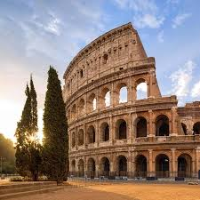

Seyahat Rehberi
Dünya üzerindeki keşfedilecek birçok harika yer var! Seyahat planınızı yaparken keşfedeceğiniz en popüler destinasyonları ve ipuçlarını burada bulabilirsiniz.
Popüler Seyahat Noktaları

Paris
Eyfel Kulesi (Tour Eiffel) Hakkında Kısa Bilgi:
Genel Bilgiler:
- Yükseklik: 330 metre (anteniyle birlikte)
- Ağırlık: 10.100 ton
- İnşa Tarihi: 1887-1889 (2 yıl, 2 ay, 5 gün sürdü)
- Mimar: Gustave Eiffel
Tarihçe:
- 1889 Paris Dünya Fuarı (Exposition Universelle) için "geçici" olarak inşa edildi.
- Amacı, Fransa'nın endüstriyel gücünü sergilemekti.
- Başlangıçta"çirkin" bulunup eleştirildi, hatta bazı sanatçılar imza kampanyasıyla yıkılmasını istedi.
- 20 yıl sonra yıkılması planlanırken,radyo anteni olarak kullanılmaya başlanınca kurtuldu.

Roma
Kolezyum (Colosseum) Hakkında Kısa Bilgi:
Genel Bilgiler:
- Orijinal Adı:Amphitheatrum Flavium
- İnşa Tarihi:MS 72-80 yılları arası (8 yılda tamamlandı)
- Kapasite:50.000-80.000 kişi
- Boyutlar:189m uzunluk, 156m genişlik, 48m yükseklik
- Hipogeum:Yeraltı tünelleri ve hayvan kafesleri
- Velarium:Gölgelik sistemi (1.000 denizci tarafından kontrol ediliyordu)
Tarihçe:
- Flavian Hanedanı(Vespasian, Titus) tarafından yaptırıldı
- Halkı eğlendirmek ve siyasi popülarite kazanmak amacıyla inşa edildi
- Açılış oyunları 100 gün sürdü ve 5.000'den fazla hayvan öldürüldü
- MS 404'tegladyatör dövüşleri yasaklandı